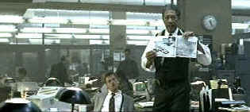
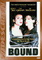

| Seven (SE)/B+,A |
| New
Line/1995/127/WS ANA 2.35 |
Seven is an excellent film which is standing up well in
light of the dismal state of new Hollywood films. Aside from the sensationalist crime staging,
Seven is a character driven film featuring intelligent dialogue and some fine acting turns. The new
DVD captures the dark nature of the material and images with outstanding clarity.
Writers love the seven deadly
sins. Serial killers Xeroxed from the pages of the National Inquirer make their way to celluloid
exposure with dreadful regularity. What separates Seven
from the run of the thrill mill is the care the script takes in examining the characters. They are
fully realized human beings, set up for the fall with frailties understood through natural
interaction. Director David Fincher takes great pains to create a dark world, a reflection of Hell
or Purgatory through which his characters must somehow survive. Fincher’s exceptional focus on
detail dresses Seven with a consistently ominous nature,
unrelenting in its look at evil. This is both a strength and weakness of the film, since, for many
audiences, the darkness of Seven’s vision is difficult
to accept.
|
 |
| Somerset puts the pieces together. ©New Line |
The three
central performances of Seven are wonderfully balanced. Morgan Freeman once again brings his magnificent sense of
humanity to the screen in his characterization of Detective Somerset. Somerset, the seasoned veteran set to retire in a week is
the perfect guide for young detective David Mills. Brad Pitt is excellent as David Mills. The
textures of his performance are perfectly tuned to Freeman's Each enhances the other. Pitt’s
performance is revelatory, full of innocence, pain, arrogance and desperation as the cop newly
transplanted to a big city police force. Kevin Spacey plays serial killer John Doe with an
evangelist’s confidence. By the time Spacey makes his appearance, director Fincher has built a
perfect case to establish the character that Spacey
presents.
Fincher’s success with Seven is a tribute to an uncompromised vision. The pacing is
contemplative, but never drags. His work with director of photography Darius Khondji is
breathtaking. The details realized from the production design of Arthur Max is stunning. Seven is part buddy movie, part procedural, part suspense
thriller, part horror flick. Under Fincher’s unifying hand, Seven
weaves it’s spell with a consistency of look, point of view and characterization. Viewers should
be prepared for graphically detailed recreations of the horror of Seven.
Talk about a knockout special
edition, Fincher and the New Line team have made a splendid effort to analyze and dissect Seven
from multiple points of view. Four audio commentaries accompany can be accessed while watching the
feature. Each is dedicated to a different aspect of the film. Track one features Fincher and stars
Morgan Freeman and Brad Pitt as they watch the film. Listening to Freeman speak is a treat in
itself, and his intelligent observations are only a bonus. Fincher is astute as you would guess
given his filmmaking talent. Brad Pitt is thoroughly enjoyable as well and the interaction between
these three dynamic personalities makes for a stirring commentary. Track two is hosted by Richard
Dyer, author of BFI Modern Film Classic Series' Seven. Dyer analyzes the cop thriller genre
while piecing together recorded comments from Fincher, screenwriter Andrew Kevin Walker, editor
Bruce Richard-Francis and New Line's President of Production Michael De Luca the script and the
project history. A third commentary is led by Dyer with Fincher, Francis-Bruce, director of
photography Darius Khondji and production designer Arthur Max expound on the look of Seven.
Yet a fourth commentary examines the sound track, music and effects, with Dyer, Fincher, composer
Howard Shore and sound designer Ren Klyce. You can switch between commentaries on the fly. If
that's not enough, the second DVD in this two-disc special edition examines varied aspects of the
film from an analytical point of view. There are deleted scenes, extended scenes, alternate
endings, photos from the John Doe collection, John Doe's notebooks, promotional materials,
filmographies and a most interesting demonstration of elements of mastering for home theater.
As good as the laser disc special edition of Seven appeared,
this DVD presentation is even more stunning. A new transfer utilizing HDTV resolution has been made
on the latest equipment. The result is a very sharp image in all lighting situations with no ugly
edge enhancement artifacts. The color is as true to the artists' vision as possible. The big bonus
of the new transfer is significant more control over light output. Some of the dark and mushy
sequences are significantly brighter without sacrificing the mood or effectiveness. The various
scenes using flashlights to examine the grisly crime scenes are especially effective. The beams of
light still maintain are eerie glow, but details in those scenes are now more discernible on the DVD presentation. New Line provides both Dolby Digital ES 5:1
and DTS ES Discrete 6:1surround tracks. I preferred the Dolby mix finding a little too much
reverberation in the and dialogue raspiness in the DTS decoding. The new mix is splendid,
delivering details with pinpoint location with subtle output. This is a soundtrack mix to send
chills up your spine.
|
|
|
|
 
Bound/B+,A-
Before the Wachowski Brothers brought The Matrix to life,
they explored the darker side of human nature in this delicious, malicious little flick.

The
Movie Poster Archive includes extensive poster images from the films of stars like Susan Hayward,
Kirk Douglas, Katharine Hepburn and many more. Our featured star is Richard Widmark.

Selections from the Feature Archive
include articles on Akira Kurosawa, Frank
Darabont, Blonde Bimbos, Hollywood Street Gangs, or Vietnam: The
Hollywood Pariah, and many more....

Click on the image of The Heistmasters for an interesting feature on the tough guys that
pull off the big jobs.

 Have you visited Home Theater
Talk lately? One of the friendliest places on the Net for Home Theater and DVD discussion, you
can get help for installation problems or simply share your opinions with other Vidiots. Have you visited Home Theater
Talk lately? One of the friendliest places on the Net for Home Theater and DVD discussion, you
can get help for installation problems or simply share your opinions with other Vidiots.
 Brad Lang continues to add more interesting material to the extensive
collection at Classic
Movies. Everything from actors and actress to your favorite directors is
linked at the site. Brad Lang continues to add more interesting material to the extensive
collection at Classic
Movies. Everything from actors and actress to your favorite directors is
linked at the site.

A self-proclaimed bastion of irreverence place where Joe
Public smacks the heck out of the studio execs that treat us like cattle.

Classic Images on classic films, featuring news, reviews, obituaries, film convention reports,
and detailed articles on film people, from the most famous to the most obscure

The
Films2 website contains Films2.com is a comprehensive film website, providing a searchable shop
of new and archived video and region 2 DVDs to buy. You can check local cinema listings, read the
latest film news, reviews and gossip, and see the latest film trailers.

The home of John Tisch's invaluable Poster Price Almanac. Every serious poster collector
uses the Almanac as a reference.
|